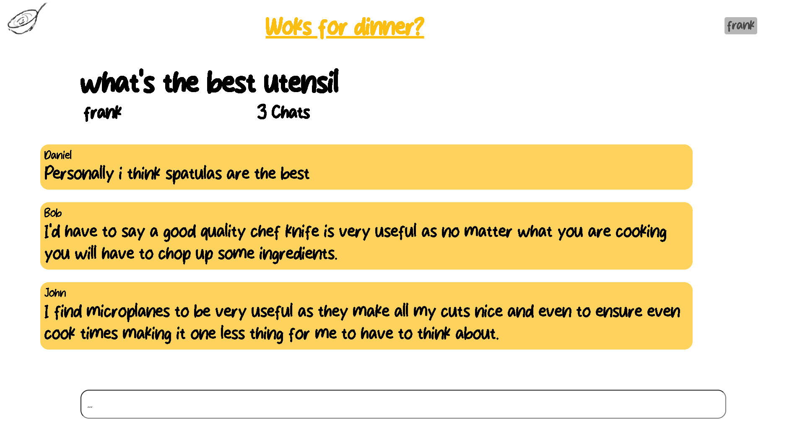

return to the shop
return to the shop

Year : 2023
Languages : PHP, JavaScript, HTML, CSS
I have a passion for food and cooking but I found it hard to find a place where I could share my creations or ask other foodies for advice, so I created Woks for dinner! A social food sharing service which allows users to browse, upload and discuss all things food!
I also wanted to push convenience towards the user by creating personalized suggestions for them based on their previous journeys through the site so they don't have to spend hours trying to find out Wok's for dinner!

The account page had to have a favorites section as I hate finding an amazing recipes only to loose them when I next want to cook them.
To further build on this project, I made a TikTok and an Instagram to try build a reputation for the brand and to show people what Woks For Dinner is all about.

Personally, I hate how many ads there are on recipe sites and how your scrolling for hours before you actually get to the content. So removed most of the ad space and the story that comes before what you actually want, to get the user cooking the recipe as quick as possible so they can enjoy a sumptuous feast as fast as possible!

Then I created a section for users to connect as after all the whole idea behind woks for dinner is for it to be a place where foodies from all over the world can connect to ask questions to help them expand their culinary horizons.

Year : 2023
Languages : PHP, JavaScript, HTML, CSS
I have a passion for food and cooking but I found it hard to find a place where I could share my creations or ask other foodies for advice, so I created Woks for dinner! A social food sharing service which allows users to browse, upload and discuss all things food!
I wanted to push convenience towards the user by creating personalized suggestions for them based on their previous journeys through the site so they don't have to spend hours trying to find out Wok's for dinner!
Personally, I hate how many ads there are on recipe sites and how your scrolling for hours before you actually get to the content. So removed most of the ad space and the story that comes before what you actually want, to get the user cooking the recipe as quick as possible so they can enjoy a sumptuous feast as fast as possible!
The account page had to have a favorites section as I hate finding an amazing recipes only to loose them when I next want to cook them.
Then I created a section for users to connect as after all the whole idea behind woks for dinner is for it to be a place where foodies from all over the world can connect to ask questions to help them expand their culinary horizons.
To further build on this project, I made a TikTok and an Instagram to try build a reputation for the brand and to show people what Woks For Dinner is all about.